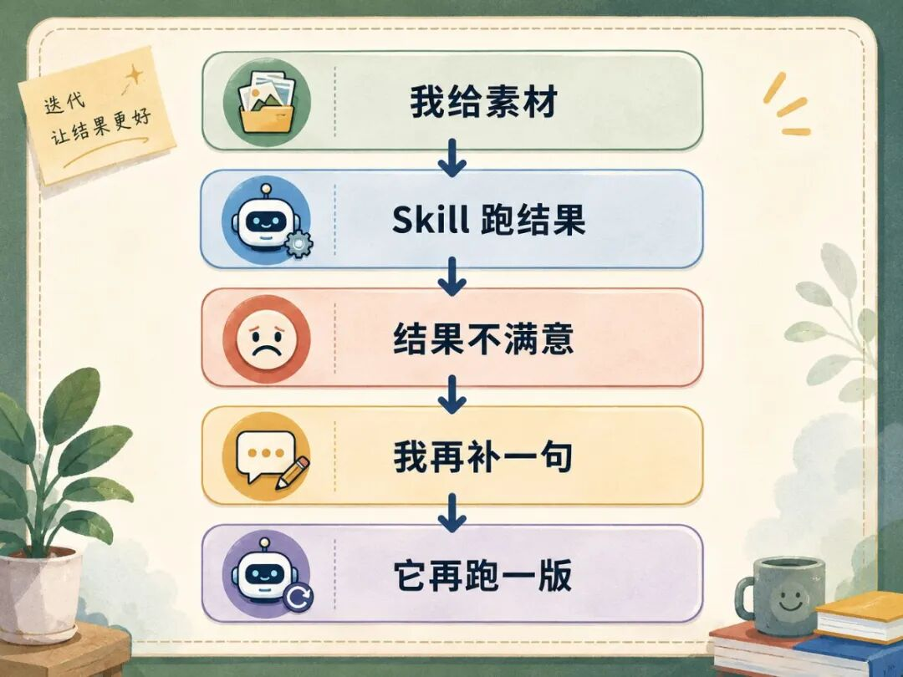

这个方法，我叫它 Skills 自进化。
它有点像大模型的强化学习。区别是，我没有训练模型参数，我训练的是 Skill 的执行方式。
以前我调一个 Skill，经常要花几个小时。现在给它一个目标，十几分钟就能跑出一版接近可用的结果。
那次高点击标题只是第一次验证。更大的变化是：Skill 开始记住怎么靠近好结果。
Skill 写完，不等于跑准
Skill 写完，不代表它每次都能跑出我想要的结果。尤其是标题、开头、大纲、正文这种任务，我给它一份素材，它会给我一个结果。
但这个结果经常差一点。关键词可能偏了，表达可能太平，方向也可能被它偷偷换掉。
所以 Skill 需要被调。
以前的调法很像手动改稿。我给素材，它跑结果；结果不满意，我再补一句，它再跑一版。

这个循环看起来也在训练，但它有两个地方很慢。
第一，它是单线的。我问一句，它答一句。一轮只试一条路，这条路不对，就要等我重新判断。
第二，它会停。结果不对，它会停；方向不清，它也会停。中间任何一步断了，都要我接手。
模型生成本身不慢，慢的是这种调试方式。它一直被卡在“我问一句，它答一句”里面。
我想一次，Agent 试十次
一开始我想的是：
我怎么把这个 Skill 改好？
后来我换成了另一个问题：
能不能我想一次，让 Agent 自己试十次？
这个问题一换，方法就变了。我不再一轮一轮推它，而是给它一个目标，让它围着这个目标自己跑。
我先给它一个靶子。靶子就是已经被结果验证过的好答案，比如一个点击率更高的标题，它给 Agent 一个接近标准。
然后用 Goal 把任务挂住。结果没接近，就继续跑，不要跑一版就停下来等我。
这里先把 Agent Team 说清楚。它不是一群 Agent 各写各的，你可以先理解成：主 Agent 一次叫多个小 Agent 去试不同改法。
主 Agent 就是当前负责 Goal 的那个 Agent。它负责看结果像不像靶子，也负责决定下一轮要试哪里，这些“下一轮要试哪里”，就是我说的训练线索。
再让 Agent Team 在同一轮里试多条路。有的路改关键词，有的路改表达，有的路对照高点击标题，有的路专门找差距。
多跑不够，线索要准
准确率不是来自多跑几版。Agent Team 如果只是多跑几版，结果只会更热闹，不一定更准。
以前也可以由人来给线索，比如我判断关键词偏了，表达结构不对，或者靶子里某个东西必须保留。
人给线索可能很准，但问题是太慢，我每次只能想出几条，再一条条交给 Agent 测。
现在这一层交给主 Agent。它会先给出一组训练线索：关键词可能偏在哪里，表达结构差在哪里，靶子里哪些东西必须被保留，哪些规则可能把结果带偏。
Agent Team 拿着这些线索去试，发散才不会散掉。这里的变化不是“人不给线索了”，而是“线索生产也交给 Agent 跑起来”。
人给线索，可能更准。Agent 给线索，效率更高，能试得更多。测试路径一多，命中好结果的概率也会变高。
主 Agent 只做两件事：
有没有接近靶子？
差距到底在哪里？
不像，就继续试。接近了，就停下来总结方法。
8% 到 13%，先拿标题验证
我第一次拿来测的，是标题 Skill。我给它文章素材，也给它一个已经验证过的高点击标题当靶子，但我没有把答案告诉它。
我只给它一个目标：
把这个标题 Skill 调到能稳定跑出接近靶子的标题。
接下来就不是我一句一句推了。主 Agent 会自己规划怎么测：它会先拆出一组训练线索，再让 Agent Team 从不同路径去试，试完一轮，主 Agent 再把结果拿回来对照靶子。
关键词没抓住，就把关键词线索拆得更细；表达不够像，就让 Agent Team 继续从结构、语气、点击动机这些方向去试；结果接近了，就停下来总结。
这个过程最像训练。它一轮一轮试，一轮一轮看，一轮一轮靠近，答案只是最后浮出来的东西。
最后跑出来的标题，不一定每个词都一样，但关键词接近，表达结构接近，点击结果也接近。
这就够了。
我要训练的是 Skill 靠近好标题的方式，某个标题只是验证结果。
写回 Skill 的不是答案，是方法
这里最容易搞错。那个高点击标题不会被塞回 Skill，下一篇文章不可能还用同一个标题。
要写回去的是方法。
写回 Skill 的，是跑出这类答案的方法。跑对的路径留下，跑偏的规则删除或降级。
下一次再跑，它就不是从零开始，它从上一次判断过的地方接着跑。
这就是 Skills 自进化。
Goal 让任务不要半路停
如果在 Codex 里，可以直接用 /goal 开头。Codex 的问题是入口不明显：你输入 /goal，不会弹出表单，也不会提醒你下一步该填什么。
Claude Code 里更自然。Goal 默认开启，你给它一个明确目标，它就会围绕目标持续推进。
我现在常用的输入格式是：
/goal
目标：用当前素材，把某个 Skill 调到能稳定产出接近靶子的结果。
主 Agent 评判：每轮只判断两件事：是否达标，差距在哪里。
Agent Team 批量测试：由模型自己决定怎么拆分路径、调用多个 Agent 测试，并把结果交给主 Agent 对照。
循环规则：没达标就继续测试，达标后停止。
最终输出：可写回 Skill 的方法论 + 应该删除或降级的规则。
这段输入的作用，是把目标、判断、测试、循环和写回一次说清楚，让主 Agent 不要跑散。
人不需要提前规定每个 Agent 的职位，人只要给目标、给靶子、看结果。Agent 负责多路试错，主 Agent 负责收敛判断，人负责最后审核：哪些方法值得写回，哪些规则应该删掉。
自进化不是放手不管
这套方法适合有靶子的 Skills，比如标题、开头、大纲、正文。这些任务能对照结果，像不像，准不准，能不能继续改，都能判断。
如果任务本身没有靶子，就很难训练。
还有一个风险是 Skills 会膨胀。Agent 很容易把所有经验都写进去，写得越多，不一定越准。
有些经验只适合这一次，有些规则会重复，有些规则还会把下一次带偏，所以人不能完全退出，人要做过程监督。
该留下的方法留下，该删的规则删掉，该降级的经验降级。
我现在对 Skills 的理解也变了。以前写 Skills，更像写一份说明书；现在训练 Skills，更像给 Agent 一个训练场。
它不断试，我不断看。有效的方法留下来，Skills 就会越用越准。